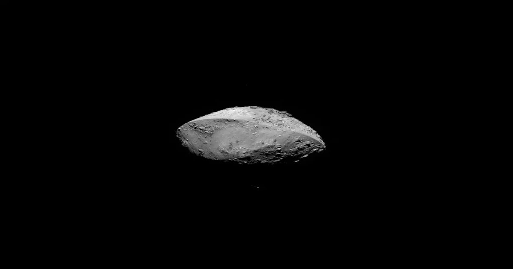

Зонд Хера изучает последствия удара ДАРТ по астероиду Димориф
Европейский аппарат Хера прибыл к двойной астероидной системе, чтобы детально осмотреть кратер и изменения орбиты после намеренного столкновения зонда ДАРТ с астероидом Димориф в 2022 году. Наземные телескопы зафиксировали смещение орбиты, но только близкий осмотр покажет истинную картину.
От удара ДАРТ к миссии Хера: зачем нужен второй зонд
В сентябре 2022 года аппарат ДАРТ НАСА намеренно врезался в 151-метровый астероид Димориф, вращающийся вокруг более крупного Дидимоса, со скоростью свыше 22 тысяч километров в час. Удар стал первым в истории тестом планетарной обороны: человечество проверило, может ли кинетический импульс сдвинуть небесное тело от опасной траектории. Наблюдения с Земли показали, что орбита Диморифа вокруг Дидимоса сократилась примерно на 33 минуты, что превысило теоретические прогнозы.
Однако ДАРТ был миссией в один конец — после удара связь с ним прервалась, и детальную картину последствий получить не удалось. Неясно, образовался ли четкий кратер или поверхность астероида деформировалась как куча щебня, и как именно внутренняя структура влияет на передачу импульса. Именно эти пробелы должна заполнить миссия Хера Европейского космического агентства, прибывшая в систему в октябре 2024 года.
Хера не просто фотографирует место столкновения — она комплексно изучает физику процесса, чтобы калибровать модели отражения астероидов. От точности этих моделей зависит, сможет ли человечество в реальной угрозе рассчитать необходимый импульс и не усугубить ситуацию фрагментацией тела.

Три режима зрения: камеры, спектрометр и тепловизор
Основные «глаза» зонда — две камеры Asteroid Framing Camera: они обеспечивают навигацию и дают черно-белые снимки с разрешением до 2,7 метра на пиксель с расстояния 28,5 километров. На кадрах четко видна форма Дидимоса, напоминающая волчок: быстрый оборот за 2,2 часа вытягивает грунт к экватору, создавая утолщение. Такая морфология важна для понимания механической прочности астероида.
Второй инструмент — ХайперСкаут — работает в 25 спектральных каналах от видимого до ближнего инфракрасного. Это позволяет строить карты минералогического состава: разные породы отражают свет по-разному, и сравнение с лабораторными пробы метеоритов покажет, из чего состоят оба астероида. Без этих данных невозможно достоверно моделировать, как порода реагирует на удар.
Третий прибор — тепловизор ТИРИ, предоставленный японским агентством ЯКСА — видит температуру поверхности. Сплошная порода остывает медленнее, пористая или расколотная — быстрее. Тепловые карты раскроют внутреннюю структуру Дидимоса и, что критично, Диморифа, который на оптических снимках скрыт в тени крупного спутника.

Что ТИРИ показал уже сейчас: Димориф в инфракрасном свете
На первых опубликованных кадрах в видимом диапазоне Димориф почти не виден: он лежит в тени Дидимоса и выглядит как крошечный засвеченный пункт. Но тепловизор ТИРИ «пробивает» тень — весь 151-метровый астероид светится холодным фиолетом на инфракрасном фоне. Это первый случай, когда малый спутник виден целиком сразу после прилета.
Температурный контраст дает прямую нить к пористости и сплошности породы. Если Димориф окажется рыхлой кучей щебня (рубинная куча), то удар ДАРТ мог выбросить огромное количество материала, усилив импульс за счет реактивной тяги вылетающего грунта. Если же внутри есть монолиты, передача энергии идет иначе. ТИРИ поможет выбрать правильную модель.
Кроме того, тепловые данные позволят оценить термическую инерцию поверхности — параметр, критически важный для предсказания долгосрочной эволюции орбиты под действием эффекта Ярковского. Это не только про прошлый удар, но и про будущее поведение астероида.
Кубсаты Ювентус и Милан: контактная разведка
Хера не ограничится дистанционным зондированием. В следующей фазе миссии зонд развернет два кубсата — Ювентус и Милан — которые слетят к астероидам на расстояния единиц километров. Ювентус оснащен геолокатором для звучения внутренней структуры, а Милан — спектрометром для детального минералогического анализа поверхности.
План миссии предполагает, что кубсаты попытаются сесть на поверхность Диморифа. Даже если посадка пройдет жестко, акселерометры зафиксируют механические свойства грунта при контакте — данные, которые невозможно получить дистанционно. Это аналог дерматологического патч-теста, только в планетарном масштабе.
Финальная цель — собрать полный набор данных для валидации численных моделей ударного взаимодействия. Только зная состав, пористость, внутреннюю структуру и реальную геометрию кратера, можно перевести планетарную защиту из категории теоретических упражнений в разряд инженерной дисциплины с предсказуемыми результатами.
Ближайшие этапы: живая трансляция и новые данные
Уже 25 ноября в Берлинском музее природы пройдет публичное мероприятие с демонстрацией самых резких на сегодняшний день изображений системы Дидимос — Димориф. Ученые миссии покажут кадры, сделанные с минимальных высот, и первые результаты обработки спектральных и тепловых рядов.
Это событие станет контрольной точкой: сообщество планетологов получит массив первичных данных для независимого анализа. До этого момента публикации были пресс-релизами с отобранными кадрами; теперь начнется настоящая научная работа с полными датасетами.
В перспективе — годы обработки, сравнения с моделями ДАРТ и уточнения параметров для будущих миссий защиты. Хера — не финал, а калибровочный этап, без которого любой следующий удар по астероиду останется игрой в угадайку.
Коротко: Миссия Хера — первый в истории детальный постфактум-аудит удара по астероиду. Комбинация оптики, спектроскопии и термографии даст полную картину внутреннего устройства Диморифа и механизма передачи импульса. Без этих данных планетарная защита остается теорией.
Как вы считаете, стоит ли инвестировать в такие миссии сейчас или лучше ждать, пока угроза станет реальной?